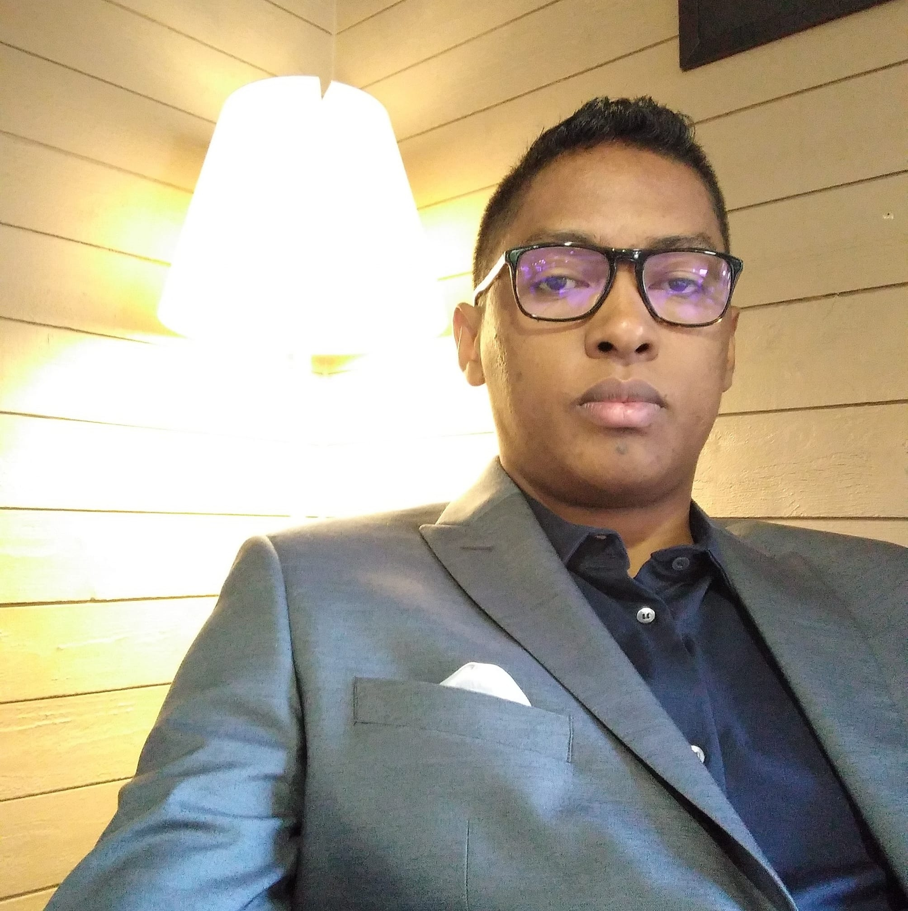

| Home | Registration | Program | Directions | Flyer |
Two days of conferences, activities and workshops at Château d’Athis. This apolitical event aims to strengthen the international intellectual cooperation of the diaspora to contribute to the understanding of issues related to the development of Madagascar through eight essential themes:
Each topic is organized into a specialized scientific Lab, which brings together 3 to 5 specialists, researchers, doctors and all other people with the necessary skills, knowledge and know-how related to the topics. The project is organized by the association IRAY. It’s particularly aimed at the future generation of leaders of the diaspora and offers a platform for expression by giving them the opportunity to share and to illustrate their knowledge and their skills.
Drawing on its international network, IRAY connects people from the younger generations of the diaspora in different countries, from different fields of expertise, leaders in the world of research, business and associations. The IRAY team works with its international partners to provide a clear, high-level vision without political influence.
The conference was organized by Onintsoa RALAIADA (Logistics reference), Maminirina Albain RAOELISON (Communications manager) and Fanirisoa Rahantamialisoa (Research Manager).
|  |